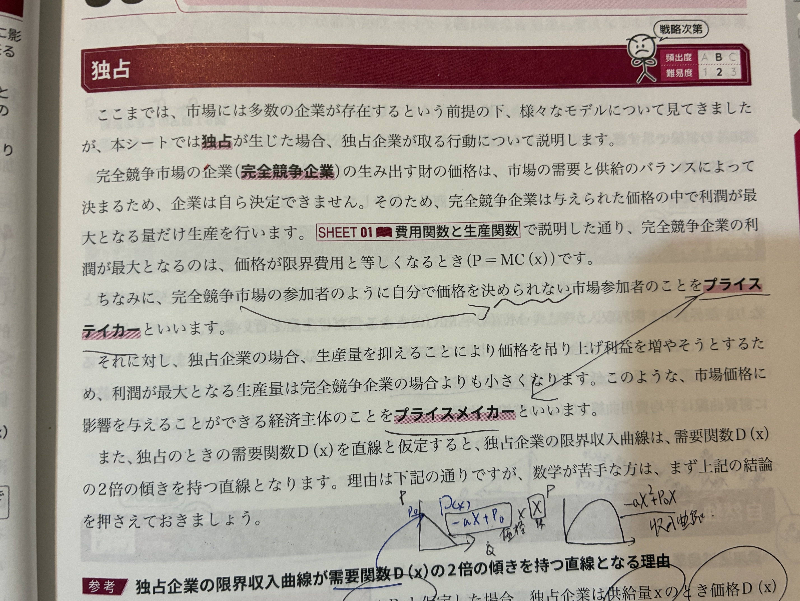
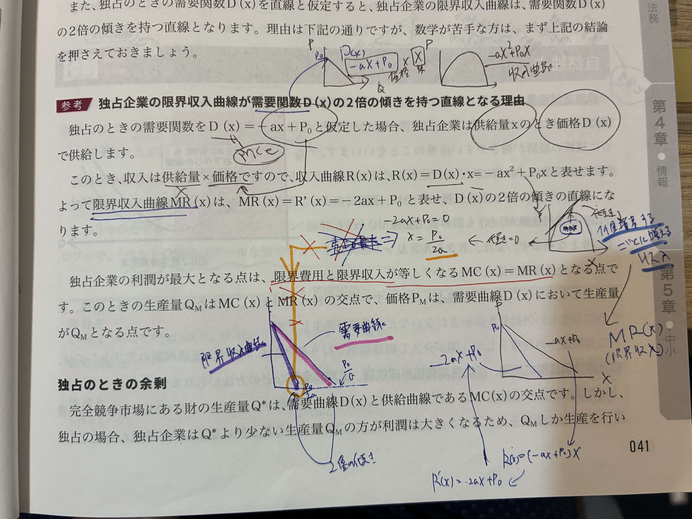
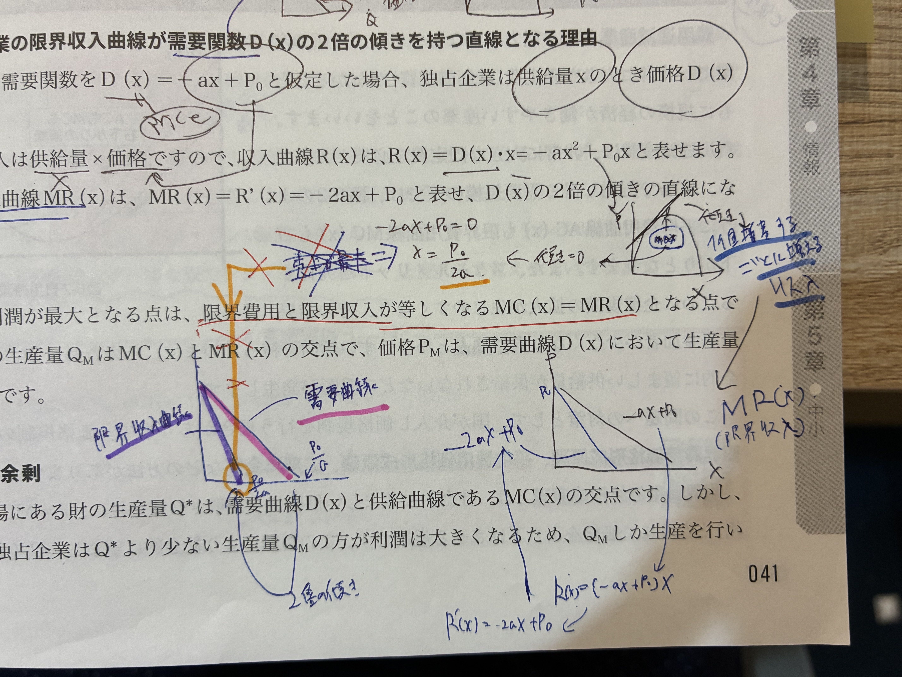

🐣 「1社しかいない市場では何が起きる？」
🧒
学習者
競争相手がいないと、企業は値段を自由に決められるよね？🧑🏫
先生
独占企業は プライスメイカー。ただし好き勝手な値段にはできない。値段を上げると消費が減るので、儲け最大の点を計算して決める。それが MR=MC。🐣 つかみ
- 完全競争の企業＝プライステイカー（価格は所与、P=MC）
- 独占企業＝プライスメイカー（自分で価格決定、MR=MC）
- 独占の生産量は完全競争より 少なく、価格は 高い
📊 完全競争 vs 独占：価格と数量の違い

📷 対応する手書きノート/教科書ページ：IMG_2416
🌱 完全競争 vs 独占
完全競争企業
プライステイカー限界収入 MR = P（一定）
P = MC で利潤最大
社会的総余剰：最大
vs
独占企業
プライスメイカーMR は需要関数の 2倍の傾き の直線
MR = MC で利潤最大
社会的総余剰：減少（死荷重発生）
📘 独占企業の限界収入
需要関数 D(x) = -ax + P₀ のとき
- 収入 R(x) = D(x) · x = (-ax + P₀)·x = -ax² + P₀·x
- 限界収入 MR(x) = R'(x) = -2ax + P₀
MR(x) は需要曲線 D(x) の 2倍の傾き
需要曲線：傾き-a／MR：傾き-2a
📘 独占の利潤最大化
🔑 MR = MC を満たす生産量 Q_M を選ぶ
- MR = MC を解き、最適生産量 Q_M を求める
- Q_M を需要曲線に代入し、独占価格 P_M を求める
→ 価格 P_M は MC より 高い。これがマークアップ（独占の利益源）。
📊 独占の利潤最大化（D・MR・MC）

📷 対応する手書きノート/教科書ページ：IMG_2417
📖 独占グラフの読み方（5ステップ）
- STEP① 需要曲線 D（赤）から MR（紫）を引く（傾き2倍）
- STEP② MR と MC（緑）の交点で Q_M を決定（独占企業はここを選ぶ）
- STEP③ Q_M を D 曲線に上向き投影 → 価格 P_M を決定
- STEP④ 完全競争なら D=MC の交点（Q*, P*）で生産＝より大きい数量・低価格
- STEP⑤ Q_M < Q* の差で 死荷重△ が発生（独占による厚生損失）
🔍 独占の余剰と死荷重
独占による厚生損失
- 完全競争：Q* で生産（P=MC）
- 独占：Q_M < Q* で生産（MR=MC）
- 取引量が減るため、消費者余剰の一部が 死荷重として失われる
🔍 自然独占
費用逓減産業で発生
固定費が大きく、生産量を増やすほど平均費用が下がる産業。電力・鉄道・水道など。
→ 1社で大規模生産する方が効率的なので、自然と独占になる。
- 長期的にも AC が逓減し、MC < AC が続く
- P=MC では赤字（MC<AC なので）→ 政府の規制・補助金が必要
🔍 独占的競争・寡占
| 市場形態 | 企業数 | 製品差別化 | 例 |
|---|---|---|---|
| 完全競争 | 多数 | 同質 | 農作物市場 |
| 独占的競争 | 多数 | 差別化あり | 飲食店、美容院 |
| 寡占 | 少数 | 同質または差別化 | 携帯キャリア、自動車 |
| 独占 | 1社 | ― | 水道、JR各社 |
✍️ ノートの青文字・手書きメモ
IMG_2415：独占・自然独占・寡占

教科書 SHEET06：完全競争企業 vs 独占企業 ／ 独占の余剰・自然独占・独占的競争
- MR=MC（独占の利潤最大化条件、青で大きく強調）
- 「限界収入＝限界費用」「行動を起こす」（赤波線で重要強調）
- 独占市場の社会的総余剰は完全競争より小さい
IMG_2416：プライステイカー／プライスメイカー
教科書：独占企業の需要曲線 D(x) と 2倍の傾きの限界収入曲線 MR(x)
- 完全競争企業＝プライステイカー（価格を受け入れる）
- 独占企業＝プライスメイカー（価格を決める側）
IMG_2417：限界収入の数式導出
教科書：D(x)=-ax+P₀ → R(x)=D(x)·x → MR(x)=R'(x)=-2ax+P₀
- R(x) = D(x)·x = -ax² + P₀x
- MR(x) = R'(x) = -2ax + P₀
- 需要曲線 D(x) の 2倍の傾き を持つ直線
IMG_2418：最適生産量の解

教科書：MR(x)=0 ⇒ x = P₀/(2a)（独占の最適生産量の導出）
- MR(x) = -2ax + P₀ = 0 → x = P₀/(2a)
- 需要曲線（ピンク）と限界収入曲線（紫）が並列に図示
🔑 これだけは押さえる
- 独占の利潤最大化条件：MR = MC
- 独占企業の MR は需要曲線の2倍の傾き（D=-ax+P₀ なら MR=-2ax+P₀）
- 独占は完全競争より 生産量少・価格高 → 死荷重発生
- 自然独占＝費用逓減産業（電力・鉄道など）
✏️ 穴埋め演習
基礎
① 独占の利潤最大化条件：MR = MC
② 完全競争企業は プライステイカー、独占企業は プライスメイカー である。
③ 需要関数 D(x)=-ax+P₀ のとき MR(x) = -2ax+P₀
④ MR は需要曲線の 2倍の傾き を持つ直線。
⑤ 費用逓減産業で発生する独占を 自然独占 という。
❓ ミニクイズ
Q1
独占企業の利潤最大化条件として正しいのはどれか。
独占はMR=MC。完全競争はMR=PだからP=MCになる、独占はMR<Pなので異なる式。
Q2
需要関数 D(x) = -2x + 20 のとき、独占企業の限界収入関数 MR(x) は？
D(x)=-2x+20 なので R(x)=-2x²+20x、MR=R'=-4x+20。需要曲線の2倍の傾きの直線。